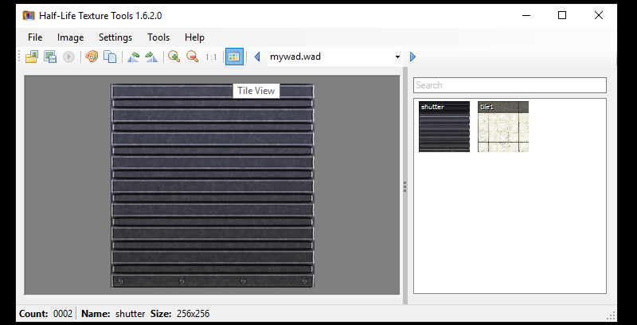

GoldSrc Map Texture Tutorial
PART1 SIMPLE TEXTURES AND WAD PACKING
For this tutorial, I will show two main modern methods of making wadfiles: Wadmaker.exe and HL-Tools. Wadmaker has a wide amount of formats that can be used and has auto-thresholding for transparency and controlled dithering however, lacks a viewer/browser. HL-Tools is a full viewer/browser and has a wad creation wizard but does not have as many formats or dither control.
Table of Contents:
1.Making wads with wadmaker.exe
2.Making wads with HL-Tools
3.Loading your custom wad and map compile
For the legacy manual indexing guide for photoshop & irfanview, Click Here.
Making wads with wadmaker.exe
With the use of Wadmaker you can use almost any art program as long as it exports to the following formats:
png, jpg, gif, bmp, tga, psd/psb (Photoshop), kra/ora (Krita) and lastly GIMP and Asesprite although you have to enable those last two in the config file. I will mention id personally avoid saving your art as jpg or gif due to quality loss before indexing.
1) First create a texture. For this I have created a wall texture at 256x256.
2)Save this file in a preferable format (in this case since im using photoshop, im using PSD). This name of the folder will become the name of your finished WadFile, in this case I used "mywad". As you can see ive also demonstrated several other formats and programs ive included in this folder. The big advantage of WadMaker is its ability to not only mix and match formats but also do it all at once in a folder.
2a)Wadmaker also has some config options to control how 8bit indexing and dithering is handled. Using notepad or notepad++, this can be set by creating a wadmaker.config in the same folder folder you are making into a wadfile.
By default floyd-steinberg dithering algorithm is applied at 75%. To change the amount of dither this you add/modify this line to the config file:
* dither-scale: 0.5
(this is 0.5 which means 50% dithering. 1.0 would be 100% dithering)
to turn dithering off you put:
* dithering: none
The "*" applies to every image in the folder, if you want it to be image specific setting put the name of the image in place of that.
(Note: full documentation is in the install folder called "wadmaker readme.html". Also in the "Custom converters" section you can assign wadmaker to a different indexing program if wadmaker isn't generating the 8bit conversion to your liking)
3) When ready, simply drag and drop the folder onto wadmaker.exe. If a wad is not created, look at the generated wadmaker - mywad.log text file that will be in the same dir as the mywad folder.
4) When the wad is sucessfully created, you optionally can verify it in a GUI viewer like Wally.exe or HLTextureTools.exe
4a) You can now either manually place the wadfile in the game of choice folder (for HalfLife you use the "valve" folder):
C:\Program Files (x86)\Steam\steamapps\common\Half-Life\valve
Or configure wadmaker to automatically place the wad on creation. Copy the example batch file int he wadmaker folder "example batch file - WadMaker.bat", open with notepad or notepad++ and follow the comments and replace or change any of the output directory lines. The file has comments and instructions within.
Click here to jump to map setup
Making wads with HL-Tools
Note that HL-Tools supports BMP, PNG, TIFF, JPG. When it auto converts it does not use dithering. Id personally avoid saving your art as jpg due to quality loss before indexing
1) Go to "tools" menu and go to "Create New Wad..." Then add or drag and drop your files. Leave the settings as is, and then save your wad.

2) Verify your created wad. Clicking the background toggles between BG colors and clicking the "tile view" changes from a simple name list to tiled preview thumbnails.

Loading your custom wad and map compile
1) Open up hammer editor and go to options > add WAD and add the custom WAD file

2) Open your map and go to the texture tab and search for the name of your texture

3) Here it is. Now apply your texture and its in the map. Compile your map and observe.

4) Currently the map is only referencing the external WAD file, and the map with the custom textures will only work if your map is accompanied by that specific WAD file. This is fine if you are making an HL mod, but If you want to make a custom map where the custom textures are part of the map file for easy downloading then you have to run a CSG command.
5) In advanced menu go to the CSG.exe line and add -wadinclude mywad.wad after the first commands.
If you are using J.A.C.K editor and get a compile error be sure that the existing parameters have quotations around it and the -wadinclude mywad.wad are outside of the quotes. An example image here.
{kind=link}
Compile the map and the wad package will now become part of the map BSP. This means you can now run the map without the external mywad.wad file.

A trick to verify if the -wadinclude command worked, you can use GCFSCAPE to open a BSP file and see if your custom textures are inside like so: